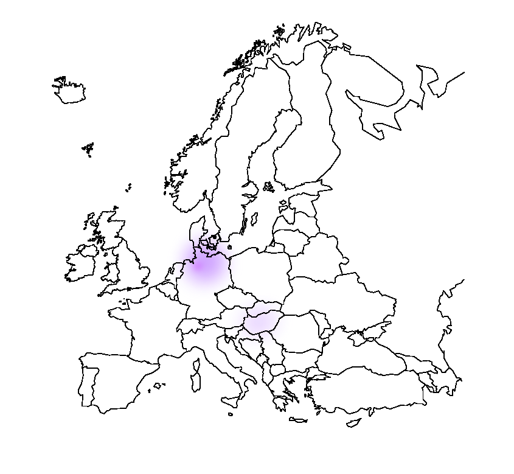

Constructive Logic, Proof Theory,
Realizability Interpretation,
Linear Algebra, Recursion Theory.
Information design, Motion Design, Signage
Interactive:
- Carryless Fibonacci Encoding, html;
Selected articles:
- A Fibonacci-Based Gödel Numbering: Δ Semantics Without Exponentiation, arXiv:2509.10382;
- On the Realizability of Prime Conjectures in Heyting Arithmetic, arXiv:2511.07774;
- Adversarial Barrier in Uniform Class Separation, arXiv:2512.08149;
- ORCID, 0009-0003-1363-7158;
- X, x.com/Milan_Rosko;
Earlier education and work in design fostered a lasting interest in structural clarity and disciplined abstraction. This eventually caused a turn toward formal logic, with an emphasis on first order systems that received comparatively little attention after the late-20th-century revival of classical approaches.
Currently, my life is centered around a research project that examines how selected problem domains evolve when developed outside the full classical apparatus. The aim is to limit the ontological commitments that typically reintroduce impredicative effects into each system separately, one hopes to maintain constructive control over expressive resources, to get a better picture how these pathologies originate and how alternative formulations can absorb them into a single, well-behaved fixed point sink.

